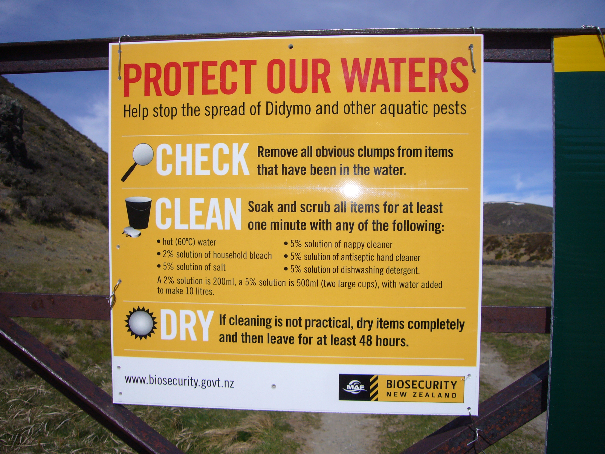

Water pollution in New Zealand is becoming an increasing issue, something needs to be done.
A large increase in dairy farming is linked to an increase in water pollution. Siltation caused by land clearance has affected lakes, rivers, caves and bays. didymo has become an increasing problem for the quilty of our water.
There are more than 800 water quality monitoring sites around New Zealand that are regularly sampled.
A large increase in dairy farming is linked to an increase in water pollution. Siltation caused by land clearance has affected lakes, rivers, caves and bays. didymo has become an increasing problem for the quilty of our water.
There are more than 800 water quality monitoring sites around New Zealand that are regularly sampled.